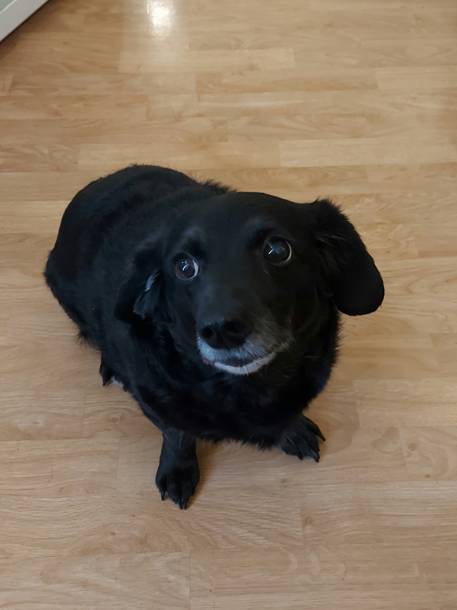

×
Hakemisto
index
styles
hiekkalaatikko
Right-sided Navigation
Click on the element below to open the right-sided navigation menu.
☰ Valikko
00B - Publishing to web
Kuva:

Karbunkel also known as Karvakasa
Upote: